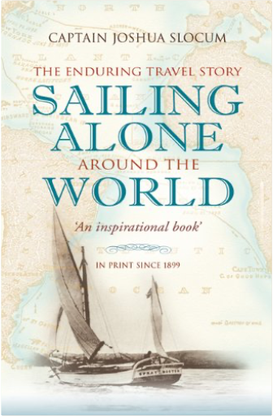

War, Ice & Piracy: The Remarkable Career of a Victorian SailorDominic Harrod War, Ice & Piracy: The Remarkable Career of a Victorian SailorDominic Harrod  The era of the 'Pax Britannic' was anything but peaceful for many Royal Navy officers. But few saw as much active service as Samuel Gurney Cresswell, who contrived to fight in the Baltic campaign of the misnamed 'Crimean War' - the first time whole battle fleets maneuvered and fought under steam power - and to achieve fame as an Arctic explorer (he is credited with being the first to traverse the much sought-after North West Passage, as the result of a truly epic sledging trip form the trapped HMS Investigator in 1853). As his career advanced, he rose to sea-going command, and played his part in the imperial coercion of China, which included amphibious operations and the suppression of piracy in the South China Sea. Throughout his action-packed service, he always found time to keep journals and to correspond with his family. He was an acute observer of the closed world of the Victorian navy, as well as the exotic climes he was privileged to visit, and his lively first-hand accounts form the raw material for this book. Like many contemporary sailor he could also express his observations in competent drawings and watercolors, but Cresswell's skill was of a higher order: indeed, he was summoned to the Palace to present his Arctic sketches to Queen Victoria, and they were eventually issued as lithographs. However, most were never published and appear here for the first time. This book follows Cresswell's career through his own journals and letters. Es Geschah an Der Mauer / It Happened at the Wall/Cela s'est passe au murRainer Hildebrandt A documentation in pictures of the border enclosing West Berlin; its development from the "13th of August, 1961" to the "9th of November, 1989", and most important events.  Three Men in a BoatJerome K. Jerome Three Men in a BoatJerome K. Jerome What could be more relaxing than a refreshing holiday on the river with your two best friends and faithful canine companion, Montmorency? However, as J. discovers, there is more to life on the waves than meets the eyeincluding navigational challenges, culinary disasters, and heroic battles with swans, kettles, and tins of pineapple. Jerome K. Jerome’s delightful novel has kept readers smiling for years and his prose has found a perfect partner in Vic Reeves’s glorious and witty illustrations.  QuintessenceLawrence Krauss QuintessenceLawrence Krauss Will the universe continue to expand forever, reverse its expansion and begin to contract, or reach a delicately poised state where it simply persists forever? The answer depends on the amount and properties of matter in the universe, and that has given rise to one of the great paradoxes of modern cosmology; there is too little visible matter to account for the behaviour we can see. Over 90 percent of the universe consists of 'missing mass' or 'dark matter' - what Lawrence Krauss, in his classic book, termed "the fifth essence". In this new edition of The Fifth Essence, retitled Quintessence after the now widely accepted term for dark matter, Krauss shows how the dark matter problem is now connected with two of the hottest areas in recent cosmology: the fate of the universe and the "cosmological constant." With a new introduction, epilogue and chapter updates, Krauss updates his classic and shares one of the most stunning discoveries of recent years: an antigravity force that explains recent observations of a permanently expanding universe.  Emperor's New MindPenrose Emperor's New MindPenrose The proponents of artificial intelligence want to prove that it is only a matter of time before computers will be doing everything that a human mind can do. They take it for granted that pleasure and pain, the appreciation of beauty and humour, consciousness and free will are capacities that a computer will display once the appropriate programs of algorithms have been developed. Some disagree, because although electronic computers can calculate very rapidly, that does not make them understand what they are doing any more than, for example, an abacus does. The author puts forward his view that there is some facet of human thinking that can never be emulated by a machine. He shows the physical and mathematical ideas that are the background to his argument - from Turing machines, algorithms and the Chinese room, via quantum mechanics, cosmology and relativity to the structure of the brain, inspiration and consciousness itself.  Lucky for MeFrank Robson Lucky for MeFrank Robson At 18months of age, Lucky a cream coloured terrior was dropped off at a vet's clinic in Queensland, abandoned by his owners. Just a week from being put down, he was adopted by Frank Robson, this is a story mateship and the joys of an independent spirit.  Apricots on the NileColette Rossant Apricots on the NileColette Rossant In 1937, five-year-old Colette Rossant arrived in Cairo from Paris with her Egyptian Jewish father and beautiful French mother. When her father dies Colette's flighty mother abandons the little girl to her wealthy grandparents. She soon settles into their luxuriant, food centred lifestyle - spending afternoons in the spice filled kitchen; accompanying her grandmother to the bazaar; and feasting on the delicious Egyptian food. At fifteen Colette is brought back to Paris with her mother, never to see her grandparents again, and only to return to Egypt thirty years later. In this charming, funny, and moving memoir, accompanied by mouth watering recipes, she evokes an Egypt lost, to her and to us, forever. Sailing Alone Around the WorldJoshua Slocum Joshua Slocum's epic solo voyage around the world in 1895 in the 37 foot sloop Spray stands as one of the greatest sea adventures of all time. It remains one of the major feats of singlehanded voyaging, and has since been the inspiration for the many who have gone to sea in small boats. |


 Made with Delicious Library
Made with Delicious LibrarySpringfield, State zipflap congrotus delicious library Doddridge, Edward